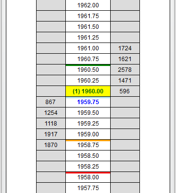
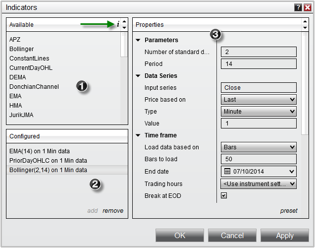
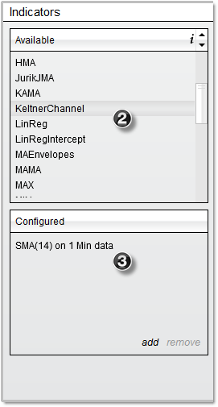
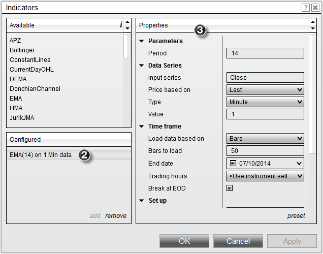
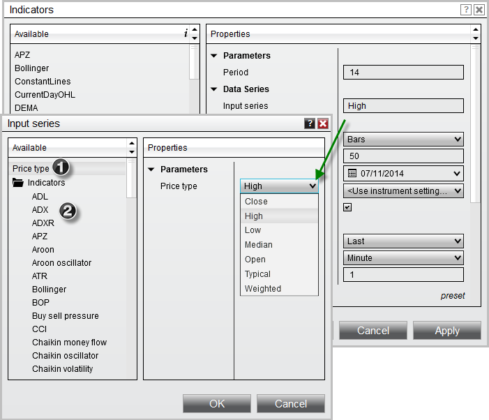

|
<< Click to Display Table of Contents >> Working with Indicators |


|
Working with Indicators
|
<< Click to Display Table of Contents >> Working with Indicators |
|
The SuperDOM's Price Ladder display has the ability to add any number of price action indicators which can be used to visualize and analyze indicator values in relation to the SuperDOM display, as well as attaching working orders to the indicator price level for a hand-free trade management system.

NinjaTrader comes with over 30 pre-built indicators which can be added the SuperDOM. Indicators can be added, removed and edited via the Indicators window.
 Understanding the Indicators window
Understanding the Indicators window
The Indicators window is used to add, remove and edit all indicators within a SuperDOM. Accessing the Indicators Window•Right mouse click in the SuperDOM select the menu Indicators Sections of the Indicators WindowThe image below displays the three sections of the Indicators window.
1.List of Available indicators (a description of the selected indicator can be viewed by clicking on the symbol, see the green arrow in the image below) 2.Current indicators Configured on the SuperDOM 3.Selected indicator's Properties
 |
Adding an Indicator To add an indicator to a SuperDOM: 1.Open the Indicators window (see the "Understanding the Indicators window" section above) 2.Left mouse click on the Available indicator you want to add and press the Add button or simply double click on it 3.The indicator will now be visible in the list of Configured indicators 4.The indicator's parameters will now be editable on the right side of the Indicators window (see the "How to edit an indicator" section below)
 |
 How to edit an indicator's parameters
How to edit an indicator's parameters
Editing an Indicator You can customize any indicator from the Indicators window: 1.Open the Indicators window (see the "Understanding the Indicators window" section above) 2.Highlight the indicator you would like to edit from the list of applied indicators (as shown in the image below). 3.Once highlighted this indicator's parameters will be available to edit on the right hand side.  Indicator ParametersThe following parameters are common to all indicators:
Saving an Indicator's Parameters as DefaultYou can optionally save your customized indicator's parameters as a default preset. Doing so will recall your customized settings the next time you add this specific indicator to a SuperDOM.
Once you have your indictor's properties set to your preference, you can left mouse click on the "preset" text located in the bottom right of the properties dialog. Selecting the option "save" will save these settings as the default settings used every time you open a new window/tab.
If you change your settings and later wish to go back to the original settings, you can left mouse click on the "preset" text and select the option to "restore" to return to the original settings.
|
||||||||||||||||||||||||||||||||||
Indicator Input SeriesThe indicator Input Series window allows you to select the input series for your indicator's calculations. This allows you to configure different data types, such as the High, or Open price, or even calculate your indicators based off of multiple nested indicators.
To access this window, move your mouse over the Input Series field, which will change to an "Edit input..." button.
1. You can then select the Close, High, Low, Median, Open, Typical, or Weighted value of any Data Series within a SuperDOM. 2. Additionally, you can also choose another indicator as the input series. When you select another indicator as the input series, you can define the properties used in the input series for the second indicator. Once you have selected the input series of your choice left mouse click the OK button to exit the Input Series window.
 |
 Understanding how indicators are displayed
Understanding how indicators are displayed
Indicator Display
|
Note: It is possible for indicators to be calculated out of range of the current Price Ladder Display. You can right click on the SuperDOM and uncheck Auto Center which will allow you to scroll up or down on the Price Ladder Display to locate the indicator that has been added. |
Removing an Indicator To remove an indicator from your NinjaTrader SuperDOM:
•Open the Indicators window (see the "Understanding the Indicators window" section above), select an indicator from the Configured indicators list, press the Remove button, and then press the OK button to exit the Indicators window. |
In addition to the over 30 price action indicators that come pre-built with the NinjaTrader application, you also have the ability to create custom indicators of your own. For example, you could create your own custom multi-series indicators to apply to your NinjaTrader SuperDOMs.
For more information on using NinjaScript to build custom indicators please see the NinjaScript section of the user help guide. Click here to view NinjaScript tutorials.
The option to hire a NinjaScript Consultant to build your custom indicators is also available. |